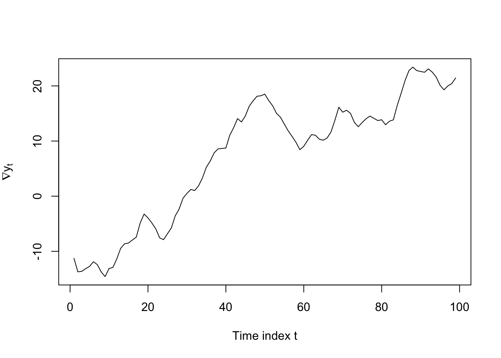

Code
set.seed(0112)
w <- rnorm(103)
Y <- vector(); Y[1:3] <- w[1:3]
for (i in 4:103) Y[i] <- 2.5*Y[i-1] - 2*Y[i-2] + 0.5*Y[i-3] + w[i]
plot(Y[4:103],type='l',ylab=expression(Y[t]),xlab='Time index t')
Having learned about AR models and MA models and difference-stationarity we are now ready to bring these pieces together into the first major modeling and forecasting technique: ARIMA models.
ARIMA is in fact an extension of a slightly simpler model called ARMA, which contains both AR and MA components. We will learn about ARMA models first before extending to the full ARIMA model.
Let \(\boldsymbol{Y}\) be a time series random variable observed at regular time periods \(T = \{1, 2, \ldots, n\}\). Let \(\boldsymbol{\omega}\) be a white noise process observed at the same time periods. If,
\[Y_t = \omega_t + \sum_{i=1}^{p}\phi_i Y_{t-i} + \sum_{j=1}^q \theta_j \omega_{t-j}\]
For some \(\Phi = (\phi_1, \ldots, \phi_p) \in \mathbb{R}^p\) and some \(\Theta = (\theta_1, \ldots, \theta_q) \in \mathbb{R}^q\) and all \(t \in T\), then we say that \(\boldsymbol{Y}\) is an autoregressive and moving average (ARMA) model written ARMA(p,q).
ARMA models quite simply combine AR and MA models in one. They allow the current value of the time series (\(Y_t\)) to depend both on past values as well as past shocks. Like other time series we have seen, ARMA models are sometimes written as though they are zero-mean, but can also be expressed with a level or a deterministic trend:
\[Y_t = c + \omega_t + \sum_{i=1}^{p}\phi_i Y_{t-i} + \sum_{j=1}^q \theta_j \omega_{t-j}\]
\[Y_t = c + \delta t + \omega_t + \sum_{i=1}^{p}\phi_i Y_{t-i} + \sum_{j=1}^q \theta_j \omega_{t-j}\]
Using the notation developed earlier, we can represent this ARMA model using the characteristic polynomials for the AR and MA components:
\[\begin{aligned} Y_t &= \omega_t + \sum_{i=1}^{p}\phi_{t-i} Y_i + \sum_{j=1}^q \theta_j \omega_{t-j} \Longrightarrow \\ \\ Y_t - \sum_{i=1}^{p}\phi_i Y_{t-i} &= \omega_t + \sum_{j=1}^q \theta_j \omega_{t-j} \Longrightarrow \\ \\ Y_t \left(1 - \sum_{i=1}^{p}\phi_i B^i \right) &= \omega_t \left(1 + \sum_{j=1}^{q}\theta_j B^j \right) \Longrightarrow \\ \\ Y_t \Phi(B) &= \omega_t \Theta(B) \end{aligned}\] Each of these two polynomials, \(\Phi(B)\) and \(\Theta(B)\), have real, imaginary, or complex roots. The location of these roots determines the properties of the ARMA series.
Sometimes, we find it mathematically convenient to work with the characteristic polynomials, and other times we find it useful to factor them in a specific way. Consider the AR equation:
\[Y_t (1 - \phi_1 B - \phi_2 B^2 - \ldots \phi_p B^p) = \omega_t\]
We can solve directly for the real or complex roots \(B^0_1, \ldots, B^0_p\), or we could factor the equation like so:
\[Y_t (1 - \lambda_1B) \cdot (1 - \lambda_2B) \cdot \ldots \cdot (1 - \lambda_pB)\]
Why would we do that? Because of a convenient formula for the sum of an infinite geometric series: For any real or imaginary constant \(r: |r| \lt 1\), we have:
\[\frac{1}{1-r} = 1 + r + r^2 + \ldots\] Which means we can write,
\[\begin{aligned} Y_t &= \omega_t \frac{1}{(1 - \lambda_1B) \cdot (1 - \lambda_2B) \cdot \ldots \cdot (1 - \lambda_pB)} \Longrightarrow \\ \\ &= \omega_t \frac{1}{\prod_{i=1}^p (1 - \lambda_i B)} = \omega_t \sum_{i=1}^p \frac{c_i}{1 - \lambda_i B} = \omega_t \sum_{i=1}^p \sum_{j=1}^\infty \lambda_i^j B^j \end{aligned}\]
Therefore, every AR process can be represented by the sum of several infinite series of geometrically dampened shocks from the past innovations. This AR process will have constant variance only if the sum of every geometric series is finite, which means that \(|\lambda_i| \lt 1\) for each and every \(\lambda_i\).1 Because each \(\lambda_i\) is a reciprocal of the roots of the characteristic polynomial,2, this is equivalent to the condition that each and every root of the characteristic polynomial must lie outside the unit circle.
A very similar line of reasoning holds with the characteristic polynomial of the MA component, \(\Theta(B)\), and its roots.
The characteristic polynomials and their roots help us to describe some ARMA processes as having one or more of the following properties.
As mentioned above, the roots of the AR characteristic polynomial determine whether the process is stationary or not. Specifically,
Let \(\boldsymbol{Y}\) be a time series random variable observed at regular time periods \(T = \{1, 2, \ldots, n\}\), and let the generating process for \(\boldsymbol{Y}\) follow an ARMA(p,q) process (where either p or q can be 0).
Let \(z_1, z_2, \ldots, z_p\) be the (possibly non-unique) real or complex roots of the AR characteristic polynomial:
\[\Phi(z) = 1 - \phi_1 z - \ldots - \phi_p z^p\]
The ARMA process \(\boldsymbol{Y}\) is stationary if and only if all AR roots lie outside the unit circle: \(|z_i| \gt 1 \quad \forall i \in {1,\ldots,p}\)
The ARMA process \(\boldsymbol{Y}\) is a random walk if and only if exactly one AR root lies on the unit circle and all others lie outside the unit circle: \(\exists \, i \in {1,\ldots,p}: |z_i| = 1\) and \(|z_j| \gt 1 \quad \forall j \in {1,\ldots,p}: j \ne i\)
The ARMA process \(\boldsymbol{Y}\) is explosive if any AR roots lie within the unit circle: \(\exists \, i \in {1,\ldots,p}: |z_i| \lt 1\)
We observe the past values \(Y_1, \ldots, Y_t\) — these concrete observations help us to identify and estimate an AR process. However, we do not directly observe the innovations \(\omega_1, \ldots, \omega_t\), and have to estimate them from our own (estimated) parameters \(\boldsymbol{\phi} = (\phi_1, \ldots, \phi_p)\) and \(\boldsymbol{\theta} = (\theta_1, \ldots, \theta_q)\). The cyclical nature of these estimates often allow multiple MA processes to fit the data equally well.
For example, consider the MA(1) series:
\[Y_t = \omega_t + 2 \omega_{t-1}, \qquad \omega_i \stackrel{iid}{\sim} \textrm{Normal}(0,1^2)\]
From this definition we could calculate the following (stationary) moments:
\[\begin{aligned} \mathbb{E}[Y_t] &= \mathbb{E}[\omega_t] + 2\mathbb{E}[\omega_{t-1}] = 0 + 2(0) = 0 \\ \\ \mathbb{V}[Y_t] &= \mathbb{V}[\omega_t] + 2^2\mathbb{V}[\omega_{t-1}] = 1 + 4(1) = 5 \\ \\ \gamma_{st} &= \left\{\begin{array}{ll} \textrm{Cov}(\omega_t,\omega_t) + \textrm{Cov}(2\omega_{t-1},2\omega_{t-1}) = 5 & \textrm{if}\; s=t \\ \textrm{Cov}(2\omega_{t-1},\omega_{t-1}) = 2 & \textrm{if}\; |s - t| = 1 \\ 0 & \textrm{else} \end{array} \right\} \end{aligned}\]
However, other MA processes would match these same moments, for example:
\[Y_t = \omega_t + 0.5 \omega_{t-1}, \qquad \omega_i \stackrel{iid}{\sim} \textrm{Normal}(0,2^2)\]
Recalculating the moments, we would see that:
\[\begin{aligned} \mathbb{E}[Y_t] &= \mathbb{E}[\omega_t] + 0.5\mathbb{E}[\omega_{t-1}] = 0 + 0.5(0) = 0 \\ \\ \mathbb{V}[Y_t] &= \mathbb{V}[\omega_t] + 0.5^2\mathbb{V}[\omega_{t-1}] = 4 + 0.25(4) = 5 \\ \\ \gamma_{st} &= \left\{\begin{array}{ll} \textrm{Cov}(\omega_t,\omega_t) + \textrm{Cov}(0.5\omega_{t-1},0.5\omega_{t-1}) = 5 & \textrm{if}\; s=t \\ \textrm{Cov}(0.5\omega_{t-1},\omega_{t-1}) = 2 & \textrm{if}\; |s - t| = 1 \\ 0 & \textrm{else} \end{array} \right\} \end{aligned}\]
Because the first and second moments are the same, any sample of data will support either model equally well.3 So, do we have any reason to prefer one over the other?
Not to hold you in suspense: yes. We do prefer one over the other. If we adopt the first model, we would write:
\[\begin{aligned} Y_t &= \omega_t + 2\omega_{t-1} \Longrightarrow \\ \omega_t &= Y_t - 2\omega_{t-1} \\ &= Y_t - 2(Y_{t-1} - 2\omega_{t-2}) \\ &= Y_t - 2(Y_{t-1} - 2(Y_{t-1} - 2\omega_{t-3})) \\ & = Y_t - 2Y_{t-1} + 4Y_{t-2} - 8Y_{t-2} + 16Y_{t-4} - \ldots \end{aligned}\]
In other words, each current innovation would be dependent upon an explosive series of the past observations of \(\boldsymbol{Y}\). Any small amount of past error (measurement error, misspecification, etc.) would compound to the point where the current values of the series would be effectively arbitrary.
However, if we use the second model — which fits the data equally well — we see that:
\[\begin{aligned} Y_t &= \omega_t + 0.5\omega_{t-1} \Longrightarrow \\ \omega_t &= Y_t - 0.5\omega_{t-1} \\ &= Y_t - 0.5(Y_{t-1} - 0.5\omega_{t-2}) \\ &= Y_t - 0.5(Y_{t-1} - 0.5(Y_{t-1} - 0.5\omega_{t-3})) \\ & = Y_t - 0.5Y_{t-1} + 0.25Y_{t-2} - 0.125Y_{t-2} + 0.0625Y_{t-4} - \ldots \end{aligned}\]
Now we see that the current innovation can be estimated as a finite, converging sum of all the past values of the series, which soon have vanishingly small effects on the present. Our ability to recover this dampened trend relies upon the roots of the MA characteristic polynomial:
Let \(\boldsymbol{Y}\) be a time series random variable observed at regular time periods \(T = \{1, 2, \ldots, n\}\), and let the generating process for \(\boldsymbol{Y}\) follow an ARMA(p,q) process (where either p or q can be 0).
Let \(z_1, z_2, \ldots, z_p\) be the (possibly non-unique) real or complex roots of the MA characteristic polynomial:
\[\Theta(z) = 1 + \theta_1 z + \ldots + \theta_p z^p\]
The ARMA process \(\boldsymbol{Y}\) is invertible if and only if all MA roots lie outside the unit circle: \(|z_i| \gt 1 \quad \forall i \in {1,\ldots,q}\)
The ARMA process \(\boldsymbol{Y}\) is non-invertible otherwise.
If any of the MA roots lie exactly on the unit circle, there exists no alternative invertible representation of \(\boldsymbol{Y}\) with the same first- and second- degree moments.
If none of the MA roots lie exactly on the unit circle, an alternative invertible representation of \(\boldsymbol{Y}\) with the same first- and second- degree moments can be found by reciprocating each root within the unit circle: \(z'_i = \frac{1}{z_i} \;\forall \; z_i: |z_i| \lt 1\)
The existence of duplicate AR or MA roots is not generally a problem. For example, consider the AR model:
\[Y_t = Y_{t-1} - 0.25Y_{t-2} + \omega_t\]
Which can be factored as \(\omega_t = Y_t(1 - B + 0.25B^2) = Y_t(1 - 0.5B)(1 - 0.5B)\) meaning that it has a double root at \(z = 2\). These roots lie outside the unit circle, the process is stationary, and \(\boldsymbol{Y}\) would be a fine target for further analysis.
However, some ARMA representations reveal one or more identical roots on both the AR and MA sides at once. This situation unnecessarily complicates the model and can mislead the analyst on matters of stationarity, invertibility, or the need for differencing.
As an example, consider an ARMA(2,1) model,
\[Y_t = 3.5Y_{t-1} - 1.5Y_{t-2} + \omega_t - 3\omega_{t-1}\]
This model looks gnarly, with large autoregressive coefficients we would normally associate with explosive behavior. However, note that we can refactor \(\boldsymbol{Y}\) as:
\[Y_t(1 - 0.5B)(1 - 3B) = \omega_t(1 - 3B)\]
And, canceling out the common terms, arrive at:
\[Y_t(1 - 0.5B) = \omega_t\]
Which expands to \(Y_t = 0.5Y_{t-1} + \omega_t\), a perfectly well-behaved stationary AR(1) model.
When discussing stationarity and the roots of the AR characteristic polynomial, I left out one possible condition: if the presence of a single root on the unit circle implies a random walk, what happens if multiple roots can be found on the unit circle?
If we do observe a random walk, such as the ARMA(1,1) process \(Y_t = Y_{t-1} + \omega_t + 0.75\omega_{t-1}\), we can always difference to find a stationary model, as described elsewhere:
\[\nabla Y_t = Y_t - Y_{t-1} = \omega_t + 0.75 \omega_{t-1}\]
Sometimes we do see multiple roots on the unit circle, in which case we need to difference multiple times, one for each root, to retrieve a stationary series. Consider the clearly nonstationary AR(3) process \(Y_t = 2.5Y_{t-1} - 2Y_{t-2} + 0.5Y_{t-3} + \omega_t\):
set.seed(0112)
w <- rnorm(103)
Y <- vector(); Y[1:3] <- w[1:3]
for (i in 4:103) Y[i] <- 2.5*Y[i-1] - 2*Y[i-2] + 0.5*Y[i-3] + w[i]
plot(Y[4:103],type='l',ylab=expression(Y[t]),xlab='Time index t')
This AR model’s characteristic polynomial factors to \(Y_t(1 - B)(1 - B)(1 - 0.5B) = \omega_t\). The difference operator itself can be defined as \(\nabla Y_t = Y_t - Y_{t-1} = Y_t(1 - B)\), and from this we see that the first difference of our AR(3) model would have the factored representation \(\nabla Y_t(1 - B)(1 - 0.5B) = \omega_t\), or when expanded, \(\nabla Y_t = 1.5 \nabla Y_{t-1} - 0.5 \nabla Y_{t-2}\). This AR(2) series is still non-stationary, but no longer explosive!
plot(diff(Y[4:103]),type='l',ylab=expression(nabla*y[t]),xlab='Time index t')
We can now apply a second round of differencing: \(\nabla^2 Y_t = Y_t(1 - B)^2\), leading to the factored representation \(\nabla^2 Y_t (1 - 0.5B) = \omega_t\) and the expanded form \(\nabla^2 Y_t = 0.5 \nabla^2 Y_{t-1} + \omega_t\), which is a stationary AR(1) series:
plot(diff(Y[4:103],differences=2),type='l',ylab=expression(nabla^2*y[t]),xlab='Time index t')
When one or more exact unit roots create random walk or explosive behavior, we can remove this nonstationary behavior by differencing. We call the amount of differencing the order of integration:
Let \(\boldsymbol{Y}\) be a time series random variable observed at regular time periods \(T = \{1, 2, \ldots, n\}\), and let the generating process for \(\boldsymbol{Y}\) follow an ARMA(\(p'\),\(q'\)) process (where either \(p'\) or \(q'\) can be 0).
If \(Y_t\) is not stationary, but \(\nabla^d Y_t\) is weakly stationary, then we say that \(\boldsymbol{Y}\) is integrated with order d.
In which case, if the stationary series \(\nabla^d Y_t\) can be written as an ARMA(p,q) process, we say that \(\boldsymbol{Y}\) follows an autoregressive integrated moving average (ARIMA) model written ARIMA(p,d,q).
We do know that the AR process is mean-zero since we have now expressed it as a weighted sum of mean-zero innovations.↩︎
Remember, the characteristic polynomial can be factored into \(\Phi(B) = \prod_i (1 - \lambda_i B)\)↩︎
So long as we use techniques like Method of Moments, Least Squares, or Maximum Likelihood which rely on first- and second-moment-based estimators.↩︎